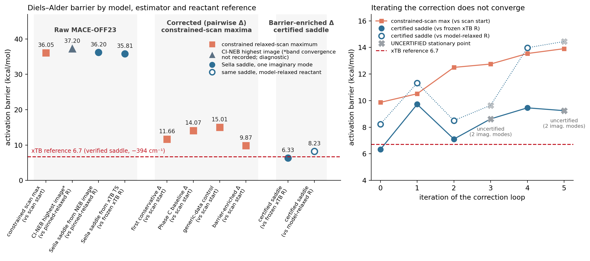

ML-Accelerated Metadynamics
Can a pretrained machine-learned potential stand in for a quantum-chemical reference in reactive enhanced sampling — and where it cannot, can a lightweight correction close the gap?
Demonstrated Diels–Alder benchmark complete Negative result iterative correction and reference handoff Work in progress Sn-β hydride-transfer benchmark in preparation
The project in six answers
What are we trying to do? Run enhanced sampling (metadynamics) on a machine-learned surrogate while keeping the accuracy of the quantum-chemical reference it replaces — and know, with evidence, where that substitution holds and where it does not.
Why pretrained MACE with enhanced sampling? Metadynamics needs long trajectories of force evaluations. A pretrained MACE model (MACE-OFF23 here) is cheap per step and scales roughly linearly, while the reference (GFN2-xTB) does not: MACE’s measured cost relative to xTB falls from 2.5× to 1.0× between 60 and 150 atoms. On equilibrium water it already reproduces the reference. Pillar 1
What did the Diels–Alder benchmark reveal? Force directions agree closely along the reaction path (mean cosine 0.982) and the two potentials place the transition state in the same region — but they describe a materially different reactive surface: MACE’s barrier is 35.8–37.2 kcal/mol depending on the estimator, against 6.7 for xTB. The difference is concentrated at the transition state and survives every methodological control. Pillar 2
What did targeted correction accomplish? A conservative pairwise correction, trained mostly on barrier-region data and applied without touching the foundation model, brings the certified saddle to 6.33 kcal/mol against the frozen xTB reactant geometry, or 8.23 kcal/mol against the reactant relaxed on the corrected model — versus 6.7 for xTB. Pillar 3
What failed or remains unresolved? Repeating the correction with more targeted reference data did not keep improving it: the scan barrier degraded from 9.87 to 13.91 kcal/mol over 42 extra reference calculations. Handing corrected-model saddles to the reference optimizer reached the reference transition state in only 3 of 6 cases, and no tested descriptor predicted which. Pillar 4
What are we testing next? Whether the newer MACE-OMOL and MACE-POLAR foundation models give a useful starting surface for a catalytic reaction — the Sn-β-catalysed glucose C2→C1 hydride transfer. The pipeline is built and tested; the authoritative structures are not yet in hand, so there are no results yet. Current work
The pipeline being tested
Reference GFN2-xTB scan, Sella saddle, Hessian — a chosen alignment target, not ground truth
→
Pretrained MACE foundation model, used off the shelf
→
Reactive-path comparison energetics, forces, saddles on both surfaces
→
Targeted correction conservative Delta fit on force residuals
→
Certified saddle one significant imaginary mode, aligned with the reaction
Findings
Each pillar is a 2–4 minute read. The detailed Studies remain the source of truth for methodology, full tables, and controls; the Methods page defines every estimator used below.
PILLAR 1
Equilibrium validation
Does off-the-shelf MACE-OFF23 reproduce GFN2-xTB for equilibrium water?
Demonstrated Yes. Forces correlate at r = 0.991–0.992 and MD reproduces the O–O structure.
PILLAR 2
Reactive benchmark
Does that agreement survive bond-forming chemistry?
Demonstrated Only partly. Force directions and TS region agree; barriers differ by 29–31 kcal/mol, a genuine difference between the two surfaces.
PILLAR 3
Targeted correction
Can a lightweight correction close the gap without retraining?
Demonstrated Largely, once. Certified saddle 6.33 (frozen xTB reactant) / 8.23 (model-relaxed reactant) vs xTB 6.7 kcal/mol.
PILLAR 4
Iteration and handoff
Does more targeted data, or handing off to the reference, keep improving it?
Negative result No. Iteration 0 stayed the best model; only 3 of 6 handoffs reached the reference TS.
CURRENT WORK
Sn-β glucose hydride transfer
Can MACE-OMOL / MACE-POLAR give a useful starting surface for a catalytic reaction?
Work in progress Pipeline built and tested; waiting on authoritative endpoint structures. No results yet.
Key numbers
All energies are Diels–Alder activation barriers in kcal/mol. Each card names the estimator and the reactant reference; they are not interchangeable (estimator glossary).
6.7 xTB reference relaxed scan; Sella saddle verified by Hessian, one imaginary mode −394 cm⁻¹
35.8–37.2 raw MACE-OFF23 35.81 Sella saddle (frozen xTB reactant) · 36.2 NEB-refined saddle · 37.20 CI-NEB highest image (diagnostic; band convergence not recorded)
6.33 certified corrected saddle reference: frozen xTB reactant geometry 8.23 — same saddle, reactant relaxed on the corrected model (stricter internal check)
9.87 → 13.91 iterative loop, scan maximum five refits, 42 extra xTB calls; no convergence toward 6.7

site/build_barrier_ladder.py.The scientific chain
Each step exists because the previous one raised a specific question:
- Equilibrium agreement is strong — which makes the reactive test meaningful rather than a foregone conclusion.
- Reactive agreement fails, and the failure is localized to the transition-state region — which motivates correcting there rather than globally.
- Targeted correction works, once — which raises the follow-up: does it keep working if iterated, and can the corrected model hand off to the reference?
- It does not, and no handoff signal was found — which points at correction capacity, rather than reference-data quantity, as the next thing to test.
The Research Map shows how the individual studies attach to this chain.
What we learned
- Demonstrated A pretrained MACE model can agree closely with a reference at equilibrium and still represent a materially different reactive surface. Equilibrium validation does not license reactive use.
- Demonstrated Matching a barrier is not the same as matching a saddle: scan maxima, NEB images, and certified saddles on the same model differ by up to 3.5 kcal/mol, and the reactant reference moves the result by another 1.9 kcal/mol.
- Demonstrated Where the correction data goes matters more than how much there is — at equal budget, barrier-region data moved the barrier; generic data did not.
- Interpretation The failure of iteration is consistent with a capacity limit of a radial pairwise correction. This is a hypothesis, not a result.
- Open question Whether a richer correction converges on the same budget — and whether the newer MACE-OMOL / MACE-POLAR models start closer for catalytic chemistry.
Reference, not ground truth GFN2-xTB is the chosen alignment target, not ground truth. This project has not established a higher-level (DFT or experimental) barrier for this reaction, so which surface is physically closer is not assessed here. Matching xTB is reference-matching, never “improved accuracy”.